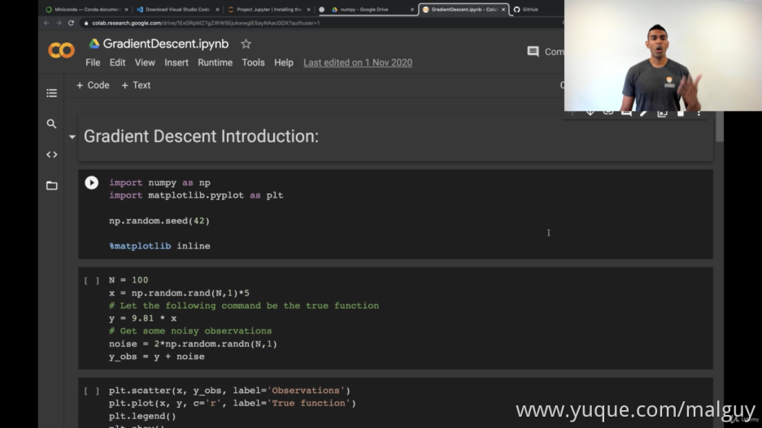
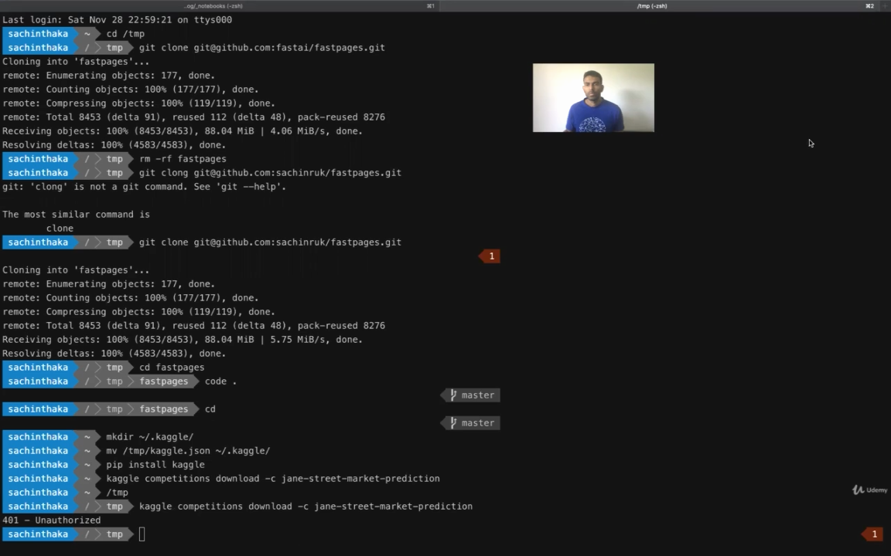

01 - Introduction
install something to get start
至少需要 python3.6
google drive
google colab

他使用的编辑器是 vscode
01.04 Jupyter Notebooks
开启 jupyter
jupyter notebook
新建 jupyter 文件
02 - Basic python + Pandas + Plotting
Data Structures
#!/usr/bin/env python
# coding: utf-8
# Native Data Structures
print("data science")
a = 1
b = 2
c = a / b
# print(a,b,c)
a,b,c
print(type(a))
print(type(b))
print(type(c))
d = [1,2,3,4]
type(d)
d[2]
d.append("cat")
d
d[-1],d[-2] # 从后面往前取值
d.pop() # 弹出
d
[elem**2 for elem in d] # **2 -> ^2 求2次方
newlist = []
for elem in d:
newlist.append(elem**2)
newlist
Dictionaries
#!/usr/bin/env python
# coding: utf-8
# In[1]:
# Dictionaries
# In[2]:
e={'a':1,'b':2,'dog':'best'}
# In[3]:
e['b']
# In[4]:
password_dict={"p1":'abc','p2':'dce'}
password_dict['p1']
# In[5]:
e['cat']='ok'
# In[6]:
e
# In[7]:
mylist=['a','b','c']
mydict={item: item+item for item in mylist}
mydict
02.04 Python functions (methods)
def addone(a):
return a + 1
print(addone(2))
def addone(a):
# 多个返回值=>元组类型
return a + 1, a + 2, a + 3, a ** 2
print(addone(1))
addone = lambda x: x + 1
print(addone(3.5))
squaring = lambda x: x ** 2
squaring(5)
squaring = lambda x,y: (x**2,y**2)
print(squaring(5,6))
02.05 Numpy functions
# numpy
# python add
a = [1,2,3]
b = [4,5,6]
print(a+b) # [1, 2, 3, 4, 5, 6]
# numpy add
a = np.array(a)
b = np.array(b)
print(a+b) # [5 7 9]
# zip函数
for item_a,item_b in zip(a,b):
print(item_a,item_b) # 1 4 | 2 5 | 3 6
def euclidean_distance(x,y):
"""
求两点间的线性距离
sqrt((x_1-y_1)^2 + ... + (x_N - y_N)^2)
"""
d = [a-b for a,b in zip(x,y)]
d = [np.square(e) for e in d]
return np.sqrt(sum(d))
def euclidean_distance(x,y):
d = [a-b for a,b in zip(x,y)]
d = [e**2 for e in d]
return sum(d) ** 0.5
x = [1,2,3]
y = [4,5,6]
print(euclidean_distance(x,y))
def euclidean_distance(x,y):
d = x-y
d = np.square(d)
return np.sqrt(d.sum())
x = np.array([1,2,3])
y = np.array([4,5,6])
print(euclidean_distance(x,y))
02.06 Conditional statements
# conditional statements and for loops
a = 1
if a<0:
print("a is negative")
elif a == 0:
print("a is zero")
else:
print('a is positive')
mystr= 'cat'
if mystr=='cat':
print("match")
mystr = 'is there a cat in here'
if 'is there' in mystr:
print('match')
mystr = None
if mystr:
print("there's something")
else:
print("there's nothing")
mystr = 0
if mystr:
print("0000")
else:
print('!!00')
# mystr = True
mystr = 1==1
if mystr:
print("there's something")
else:
print("there's nothing")
02.07 For loops
# for loops
for i in range(10):
if i%2==1:
print(i)
for i in range(10):
if i==4:
continue
if i==8:
break
if i %2==0:
print(i)
# nesting
for i in range(4):
for j in range(4):
if j>i:
break
print(i,j)
02.08 Dictionaries again
mylist = ['a','b','c']
mydict = {a:a+a for a in mylist}
print(mydict)
print(mydict['c'])
for key,val in mydict.items():
print(key,val*2)
print(mydict.items())
for letter in 'cat':
print(letter)
print(mydict.keys())
print(mydict.values())
02.10 Intro

02.11 Pandas simple functions
import pandas as pd
df = pd.read_csv('./titanic/train.csv')
print(df.shape) # (891, 12)
print(df.head()) # 显示头5个数据
# 返回其唯一值
print(df['Survived'].unique()) # [0 1]
# 1表示存活,0表示死亡,所以sum的结果就是幸存者数量
print(df['Survived'].sum()) # 返回该字段所有数据的加和
# 死亡人数
died = df.Survived==0
print(died.sum())
male = df.Sex=='male'
print(male.mean()) # 平均值?
print(df.Pclass.nunique())
print(df.Pclass.unique())
print(df.Fare.nunique())
print(df.Fare.unique())
print(df.describe())
print(df.dtypes)
02.12 Pandas Subsetting
# subsetting
print(df[df.Pclass==1].tail()) # tail()尾部5行
print(df[df.Pclass==1].tail(10)) # tail(n)尾部n行
print(df[(df.Pclass==1) & (df.Sex=='male')].head())
print(df[(df.Pclass==1) | (df.Sex=='male')].head())
cond1 = df.Pclass>1
cond2 = df.Sex!='male'
print(cond1, cond2)
print(df[cond1 & cond2].head())
02.13 Pandas loc and iloc
# ioc and iloc
## frac -> 对其中的多少(0~1)进行采样
## sample 会打乱顺序
df = df.sample(frac=0.6)
print(df.head())
# 锁
# df.loc[4]
df.loc[[4],'Sex']
# df.iloc[4]
df.iloc[4,4]
02.15 Pandas map and apply
# Map and Apply
df.sort_index(inplace=True) # pandas排序方法,inplace=True -> 创建新实例
print(df.Name.values[-10:][0])
# 遍历每个Name字段的值,并根据 , 分割,取分割后的第一个
# df['Last_name']=df.Name.map(lambda x: x.split(',')[0])
df['Last_name']=df["Name"].map(lambda x: x.split(',')[0])
print(df.sample(10)) # 随机抽10个
# 把Name和Age列拼接
print(df.apply(lambda x: x['Name']+" "+str(x["Age"]),axis=1))
print(df.Fare.min())
# 对每个log_fare的值取对数
# df['log_fare']=df.Fare.map(lambda x: np.log(x+1)) # 这里的log是取对数
df['log_fare']=df.Fare.apply(lambda x: np.log(x+1)) # 这里的log是取对数
print(df.sample(10))
02.16 Pandas groupby

# groupby
## 根据Pclass字段分组,然后分别求每组的log_fare的mean
print(df.groupby('Pclass')['log_fare'].mean())
## Age字段一共有多少null值
print(df['Age'].isnull().sum())
## 根据Pclass字段分组,遍历Age字段(每组的),然后求其sum
df.groupby("Pclass")['Age'].apply(lambda x:x.isnull().sum())
## agg聚合,对某个数据进行多个操作
print(df.groupby("Pclass").agg({"Age":[sum,min,np.mean]}))
# for name,grp in df.groupby("Pclass"):
# 调试器
# import pdb;pdb.set_trace()
# breakpoint() # 断点
02.19 Line plot
import pandas as pd
import numpy as np
import matplotlib.pyplot as plt
# %matplotlib inline
x = np.arange(-5,5,0.1) # -5到5,步长(单位长度)为0.1
y = np.square(x) # x的平方
plt.plot(x,y)
plt.title('$y=x^2$')
plt.xlabel('x')
plt.ylabel('y')
plt.show()

02.20 Plot multiple lines
x = np.arange(-5,5,0.1) # -5到5,步长(单位长度)为0.1
y = np.square(x) # x的平方
y2 = x ** 3 # x^3
plt.figure(figsize=(12,5)) # figsize 尺寸?
plt.plot(x,y,label='$y=x^2$')
plt.plot(x,y2,label='y=x^3')
plt.title('powers of x')
plt.xlabel('x')
plt.ylabel('y')
plt.legend() # 左上角的标签
plt.grid() # 网格
plt.show()
plt.savefig('figures1.png') # 保存图片


02.21 Histograms
import pandas as pd
import numpy as np
import matplotlib.pyplot as plt
# %matplotlib inline
df = pd.read_csv("./titanic/train.csv")
print(df.shape) # (891, 12)
print(df.head())
# 直方图
plt.hist(df.Fare,bins=30) # bins是柱子的宽度(x的跨度)
plt.grid()
plt.xlabel("Fare")
plt.title("Fare histogram")
plt.show()
df['log_fare'] = np.log(1+df.Fare)
# Pclass.unique 该字段所有不同的取值
for c in df.Pclass.unique():
"""
iloc 取指定单行多列 ;不能直接取字段，报取值错误
loc 取指定单行，多列，与iloc一样 ;不能像iloc一样直接取指定行，报类型错误;可以去特定行和列，得到指定得一个数字
"""
# alpha是每列的透明度
# density是密度 -> 是否将直方图的频数转换成频率；
plt.hist(df.loc[df.Pclass==c,'log_fare'], bins=30,alpha=0.3,label=c,density=True)
plt.legend()
plt.show()

02.22 Scatter Plots
import pandas as pd
import numpy as np
import matplotlib.pyplot as plt
# 逻辑回归
from sklearn.linear_model import LogisticRegression
# %matplotlib inline
df = pd.read_csv("./titanic/train.csv")
print(df.shape) # (891, 12)
print(df.head())
plt.plot(df.Age,df.Fare)
plt.title('Fare vs Age')
plt.show() # -> 很混乱的线,它试图连接每个点
# 点图
plt.scatter(df.Age,df.Fare)
plt.title('Fare vs Age')
plt.show()
# 丢弃含空值的行、列
df.dropna(inplace=True,subset=['Fare', 'Age'])
print(df.shape) # (714, 12)
model = LogisticRegression()
# y必须是int或string类型
model.fit(df.Age.values.reshape(-1,1), df.Fare.values.reshape(-1,1).astype('int'))
x=np.arange(df.Age.min(),df.Age.max(),0.1).reshape(-1,1) # .reshape(-1,1)->转为一列
y=model.predict(x) # 模型的预测
plt.scatter(df.Age,df.Fare,label='data',c='g') # c -> color
plt.scatter(x,y,label='best fit',c='r')
plt.title('Fare vs Age')
plt.legend()
plt.show()

02.23 Subplots
import matplotlib.pyplot as plt
import numpy as np
from PIL import Image
x=np.arange(-5,5,0.1)
y=np.square(x)
y1=x**3
y2=x**4
img=np.array(Image.open('./QQ图片20211020220545 - 副本.png'))
# 子图
fig,ax = plt.subplots(2,2,figsize=(10,10))
## 4个位置上创建不同子图
ax[0][0].plot(x,y)
ax[0][0].set_xlabel('x')
ax[0][0].set_title("first plot")
ax[0][1].plot(x,y1)
ax[1][0].plot(x,y2)
ax[1][1].plot(img)
fig.savefig('subplots.jpg')
# fig.show()
# 因为图一下子就没了,所以用断点卡住
# breakpoint()
02.24 Seaborn + pair plots
pip install seaborn
from sklearn.datasets import load_iris
import pandas as pd
import seaborn as sns
import matplotlib.pyplot as plt
# %matplotlib inline
data=load_iris() # 字典类型
print(data)
df = pd.DataFrame(data['data'],columns=data['feature_names'])
df['target']=[data['target_names'][i] for i in data['target']]
print(df)
# sns.pairplot(df)
# sns.pairplot(df,vars=df.columns[:2])
# hue加颜色, 色调密度估计->density estimation
sns.pairplot(df,vars=df.columns[:2],hue='target')
plt.show()
03 - Machine Learning Numpy + Scikit Learn
03.03 Gradient Descent
我们希望尽量减少 L 的值，其中 y 和 x 不变，w 会改变，(y-f())^2 是误差的平方，最后那个公式就是梯度
import numpy as np
import matplotlib.pyplot as plt
"""
seed( ) 用于指定随机数生成时所用算法开始的整数值，如果使用相同的seed( )值，则每次生成的随即数都相同，
如果不设置这个值，则系统根据时间来自己选择这个值，此时每次生成的随机数因时间差异而不同
"""
np.random.seed(42)
N = 100
# rand函数根据给定维度生成[0,1)之间的数据，包含0，不包含1
# 参数就是生成的维度(N,1) -> N*1
# 返回值为指定维度的array
x = np.random.rand(N,1)*5
y = 9.81*x
# randn函数返回一个或一组样本，具有标准正态分布。
# 参数就是生成的维度(N,1) -> N*1
noise = 2*np.random.randn(N,1)
y_obs = y+noise
plt.scatter(x,y_obs,label="Observations")
plt.plot(x,y,c='r',label="True function")
plt.legend()
plt.show()
# helper functions
# w*x (y=w^t*x+b)
def f(w):
return w*x
# 方差
def loss_function(e):
L = np.sum(np.square(e))/N
return L
def dL_dw(e,w):
return -2*np.mean(e*x)
def gradient_descent(iter=100,gamma=0.1):
w=10*np.random.random()
params=[]
loss = np.zeros((iter,1))
for i in range(iter):
params.append(w)
e=y_obs-f(w) # (y_obs真实值-f(w)预测值)
loss[i]=loss_function(e)
# update parameters
w_news=w-gamma*dL_dw(e,w) # 更新w
w=w_news
return params,loss
params,loss=gradient_descent()
iter=100
gamma=0.1
w=10*np.random.randn()
params=[]
loss=np.zeros((iter,1))
for i in range(iter):
params.append(w)
e=y_obs-f(w)
loss[i]=loss_function(e)
w_news=w-gamma*dL_dw(e,w)
w=w_news
print(dL_dw(e,w)) # -1.0766942892814769e-14
plt.plot(loss)
plt.show()
params=np.array(params)
plt.plot(params)
plt.title('Gradient Descent')
plt.xlabel('w')
plt.show()
print(params[-1]) # 9.757142247178272


重置版代码
import numpy as np
import matplotlib.pyplot as plt
# 设置随机种子,相同的随机种子生成的随机数相同
np.random.seed(42)
# jupyter: %matplotlib inline
N = 100
# rand: 生成N行1列的(正)随机数组(值0~1)
x = np.random.rand(N, 1) * 5
# print(x)
# let the following command be the true function
# n = mg
y = 9.81 * x
# get some noisy abservations (添加噪音)
# randn: 生成的随机数服从均值0,方差1的正态分布
noise = 2 * np.random.randn(N, 1)
y_obs = y + noise
plt.scatter(x, y_obs, label='Observations')
plt.plot(x, y, c='r', label='True function')
# 上面添加了label，这里legend生成图片
plt.legend()
plt.show()
# 我们希望用梯度下降减少误差(y-y_obs)^2
# 辅助函数
def f(w):
return w * x
# 损失函数，将误差平方后求合 / N (求平均)
def loss_function(e):
L = np.sum(np.square(e)) / N
return L
# 计算梯度: &L/&w = 1/N * ∑(2(y-wx)(-x)) = 1/N * ∑(2ξx)
def dL_dw(e, w):
# mean：求平均
return -2 * np.mean(e * x)
# w 会更新 -> w_new = w_current - γ * &L/&w ，其中γ是学习率(0~1)
# the actual gradient descent
def gradient_descent(iter=100, gamma=0.1):
'''
:param iter: 迭代轮数
:param gamma: 学习率
:return: w的历史值，loss的历史值
'''
# get starting conditions
# 随机数
w = 10 * np.random.randn()
# 保存参数w的所有历史值
params = []
# 生成 iter行1列的 0填充的 数组
loss = np.zeros((iter, 1))
for i in range(iter):
params.append(w)
# 计算误差
e = y_obs - f(w) # really important that you use y_obs and not y (you do not have access to true y)
loss[i] = loss_function(e)
# update parameters
# w更新
w_new = w - gamma * dL_dw(e, w)
w = w_new
return params, loss
# params, loss = gradient_descent()
iter = 100
gamma = 0.1
w = 10 * np.random.randn()
params = []
loss = np.zeros((iter, 1))
for i in range(iter):
# from IPython.core.debugger import Tracer; Tracer()()
params.append(w)
e = y_obs - f(w)
loss[i] = loss_function(e)
w_new = w - gamma * dL_dw(e, w)
w = w_new
print(dL_dw(e, w)) # 1.63025148935958e-14
plt.plot(loss)
plt.show()
params = np.array(params)
plt.plot(params)
plt.title('Gradient descent')
plt.xlabel('w')
plt.show()
# 查看最后一个w，可以看到非常接近9.8
print(params[-1]) # 9.757142247178274
03.04 Kmeans
import matplotlib.pyplot as plt
import numpy as np
np.random.seed(42)
K = 3
D = 2
N = 1000
Ns = [300,400,300]
# 3*2 规格的随机数
means = 5*np.random.randn(K, D)
print(means)
x = []
for n,m in zip(Ns,means):
print(n,m)
x.append(np.random.randn(n,D)+m)
# print(x)
print([x_.shape for x_ in x])
for x_,m in zip(x,means):
print(x_.shape,m.shape)
plt.scatter(x_[:,0],x_[:,1])
plt.plot(m[0],m[1],'kx')
plt.title('True Clusters')
plt.show()
data=np.vstack(x)
plt.scatter(data[:,0],data[:,1])
plt.show()
print(data.shape)
def distance_matrix(x,m):
"""
计算x和m之间的距离
x -> data point
m -> possible means
"""
# x*m的d向量(值都为0)
d = np.zeros((len(x),len(m)))
for i in range(len(x)):
for j in range(len(m)):
# [x,m]的值 => 对应x,m的距离
d[i,j] = dist(x[i,:],m[j,:])
return d
def dist(x1,x2,axis=None):
"""
计算euclidean(欧几里得)距离
"""
return np.sqrt(np.sum(np.square(x1-x2),axis))
x_test = np.array([[0,1],[1,0],[0,0],[1,1]])
print(x_test)
print(distance_matrix(x_test,x_test))
def dist(x1,x2,axis=None):
"""
calculate enclidean distance
"""
# breakpoint()
return np.sqrt(np.sum(np.square(x1-x2),axis))
def distance_matrix2(x,m):
# breakpoint()
d = [dist(x,m_,axis=1)for m_ in m]
d = np.stack(d,axis=1)
return d
print(distance_matrix2(x_test,x_test))
k = 3
iters=10
np.random.seed(42)
# 在data里取随机一个中心点
means=np.random.randn(k,data.shape[1])
for i in range(iters):
# 求data中点和means的距离
d = distance_matrix(data,means)
# 求其中最小距离的点
cluster = d.argmin(axis=1)
for j in range(k):
idx = cluster == j
plt.plot(means[j,0],means[j,1],'rx')
plt.scatter(data[idx,0],data[idx,1])
# calculate new mean
means[j,:]=data[idx].mean(axis=0)
plt.show()
# breakpoint()
重置版代码
import matplotlib.pyplot as plt
import numpy as np
# 设置随机数种子
np.random.seed(42)
# %matplotlib inline
# 集群数
K = 3
# 两个维度
D = 2
# 点的总数
N = 1000
# 不同集群的点数
Ns = [300, 400, 300]
# 3行2列 的随机数组(服从正态分布)
# 相当于生成3个二维坐标点 -> [[x1,y1],[x2,y2],[x3,y3]]
means = 5 * np.random.randn(K, D)
print(means)
x = []
# x: ['a','b','c'], y: [1, 2, 3] -> zip(x,y) -> ('a',1), ('b', 2), ('c',3)
# zip(Ns, means) -> [(300,[x1,y1]),(400,[x2,y2]),(300,[x3,y3])]
for n, m in zip(Ns, means):
print(n, m)
# 生成 n行2列的 随机数组 -> 相当于n个二维坐标点 -> m是means里的二维坐标(集群中心点)
x.append(np.random.randn(n, D) + m)
# 此时x的shape(形状)
# [(300, 2), (400, 2), (300, 2)]
print([x_.shape for x_ in x])
# zip -> [((300, 2),[x1,y1]),((400, 2),[x2,y2]),((300, 2),[x3,y3])]
for x_, m in zip(x, means):
print(x_.shape, m.shape)
# scatter(x,y) -> 绘制散点图
# x: n行2列 -> x_[:,0]: 所有行的第一列(xi), x[:,1]: 所有行的第二列(yi)
plt.scatter(x_[:, 0], x_[:, 1])
# 绘制集群中心点
# plt.plot里的这个'kx' -> 颜色字符k: 表示黑色，标记字符x: 表示图案为x标记
plt.plot(m[0], m[1], 'kx')
plt.title('True Clusters')
plt.show()
# 从x取出所有数据
# np.vstack: 按垂直方向（行顺序）堆叠数组构成一个新的数组,堆叠的数组需要具有相同的维度
# np.hstack: 按水平方向（列顺序）堆叠数组构成一个新的数组,堆叠的数组需要具有相同的维度
data = np.vstack(x)
print(data.shape)
plt.scatter(data[:, 0], data[:, 1])
plt.show()
# 计算欧式距离 √((x1-x2)^2 + (y1-y2)^2)
def dist(x1, x2, axis=None):
"""
Calculate euclidean distance
:param x1: 点1 (x1,y1)
:param x2: 点2 (x2,y2)
:param axis:
:return:
"""
# np.square(x1 - x2) -> (x1-x2)^2 平方
# np.sqrt 开根号
return np.sqrt(np.sum(np.square(x1 - x2), axis))
# 计算平均值和任意给定点的距离
def distance_matrix(x, m):
"""
Calculates the distance from each element x to each element in m.
:param x: data points
:param m: possible means
:return: distance matrix
"""
# 初始化(用0填充)距离矩阵(len(x)行len(m)列)
d = np.zeros((len(x), len(m)))
for i in range(len(x)):
for j in range(len(m)):
# 传入x的第i行所有列 x[i] -> (xi,yi)
# 传入m的第j行所有列 m[j] -> (xm,ym)
d[i, j] = dist(x[i, :], m[j, :])
return d
# 测试
# Test out the distance matrix algorithm
x_test = np.array([[0, 1], [1, 0], [0, 0], [1, 1]])
print(distance_matrix(x_test, x_test))
# 使用广播替代循环(python的循环性能低)
# broadcasting
# 计算欧式距离 √((x1-x2)^2 + (y1-y2)^2)
def dist(x1, x2, axis=-1):
"""
Calculate euclidean distance
:param x1: 点1 (x1,y1)
:param x2: 点2 (x2,y2)
:param axis:
:return:
"""
return np.sqrt(np.sum(np.square(x1 - x2), axis))
def distance_matrix_broadcasting(x, m):
# np.sum(axis=0) -> 行(维度1)求和 -> [[x1,y1],[x2,y2]] -> [[x1+x2],[y1+y2]]
# np.sum(axis=1) -> 列(维度2)求和 -> [[x1,y1],[x2,y2]] -> [[x1+y1],[x2+y2]]
# x所有点与m_相减([xx-mx,xy-my])并求平方，然后列相加((xx-mx)^2+(xy-my)^2，然后开根号得距离
d = [dist(x, m_, axis=1) for m_ in m]
# print(d)
# 按行堆叠(axis=1)
d = np.stack(d, axis=1)
return d
# 测试
# Test out the distance matrix algorithm
x_test = np.array([[0, 1], [1, 0], [0, 0], [1, 1]])
print(distance_matrix_broadcasting(x_test, x_test))
# 计算k-means
# 初始化数据
# 集群数
k = 3
#
iters = 10
print(data.shape)
print(data)
# (1000, 2)
# 3个集群中心点，(3行2列)
means = np.random.randn(k, data.shape[1])
for i in range(iters):
# 求data和中心点的距离 -> shape: (1000, 3) -> 这1000个点分别到3个中心点的距离
d = distance_matrix_broadcasting(data, means)
# print(d[:10])
# print(d.shape) # (1000,3)
# np.argmin: 找到最小的(值的下标)然后映射到指定轴
'''
array([[0, 4, 2],
[3, 1, 5]]) # 3*2
>>> np.argmin(a, axis=0)
映射到行x
找出每列最小元素的下标
array([0 1 0]) # (3,)
>>> np.argmin(a, axis=1)
映射到列y
找出每行最小元素的下标
array([0 1]) #(2,)
'''
cluster = d.argmin(axis=-1) # 找到平均距离最小值然后映射到列
# true
# print(cluster == np.argmin(d, axis=1))
# print(cluster[:10]) # [一堆0、1、2]
# print(cluster.shape) # (1000,)
for j in range(k):
# print(j) # 0,1,2
# 筛选出和第j个集群中心点最近的下标
idx = cluster == j # numpy布尔索引
# print(idx)
# print(data[idx])
# 绘制集群中心点
plt.plot(means[j, 0], means[j, 1], 'rx')
# data[idx] -> 找出所有cluster==j(与集群中心点j最近)的元素，组成新数组
plt.scatter(data[idx, 0], data[idx, 1])
# calculate new mean
# print('means\n', means[j, :])
# print('new:\n', data[idx].mean(axis=0))
# 根据当前平均距离最小的点确定新点
# 将距离集群中心点j最近的所有点的坐标求平均,得出新点的坐标
means[j, :] = data[idx].mean(axis=0)
# print(data[idx])
# print(means[j, :])
plt.show()
03.06 Broadcasting
import numpy as np
np.random.seed(1)
a= np.random.rand(3,2)
b= np.random.randint(0,2,(2,)) # [0 1]
print(a,b)
print(a*b)
c= np.random.randint(0,2,(2,1))
print( c) # [[1][0]]
# print(a*c) # error
print(a*c.T)
b = b[None,:]
print(b.shape) # (1,2)
print(a+b)
print(a + b.squeeze())
print(a,b.squeeze()) # squeeze [[0,1]] -> [0,1]
loss=np.random.randn(3,1)
weight=np.random.randn(3)
weighted_loss=loss*weight # (3,1) * (3,)
print(weighted_loss)
weighted_loss=loss*weight[:,None] # (3,1) * (3,1)
print(weighted_loss,weighted_loss.shape) # (3,1)
print(weighted_loss.mean())
print(sum(weighted_loss)/len(weighted_loss))
重置版代码
import numpy as np
np.random.seed(1)
a = np.random.rand(3, 2)
# randint(low, high=None, size=None, dtype=int)
b = np.random.randint(0, 2, (2,))
print('a\n', a)
print('b\n', b)
print(a * b)
print((a * b).shape) # (3,2)
c = np.random.randint(0, 2, (2, 1))
print('c\n', c)
# operands could not be broadcast together with shapes (3,2) (2,1)
# print(a * c) # 试图用 a[0,0]*c[0,0] a[1,0]*c[1,0] a[2,0]*?
print(c.T) # [[1,0]]
print(c.T.shape) # (1, 2)
print(a * c.T)
# tips: 增加维度
print('shape b\n', b.shape) # (2,)
b = b[None, :] # 增加行维度
print('shape b\n', b.shape) # (1, 2)
# 猜测,最后一个维度必须匹配才能广播broadcasting
print(a + b) # (3,2) + (1,2)
b2 = b.squeeze()
print('shape b.squeeze\n', b2.shape) # (2,)
# error
# print(a.T + b) # (2,3) + (1,2)
# squeeze减少维度
print(a + b2) # (3,2) + (2,)
print(a + np.array([0]))
# print(np.array([0]).shape) # (1,)
# error
# print(a.T + b2) # (2,3) + (2,)
# e.g.
loss = np.random.randn(3, 1)
print('shape loss\n', loss.shape) # (3, 1)
weight = np.random.randn(3)
print('shape weight\n', weight.shape) # (3,)
weighted_loss = loss * weight
print('wl\n', weighted_loss)
# 这里广播后,变成 (3,3)
print('shape wl\n', weighted_loss.shape) # (3, 3)
# 我们希望结果是(3,1)
# 增加列维度
weight = weight[:, None]
print('shape weight\n', weight.shape) # (3, 1)
weighted_loss = loss * weight
print('wl\n', weighted_loss)
print('shape wl\n', weighted_loss.shape) # (3, 1)
print(weighted_loss.mean())
print(sum(weighted_loss) / len(weighted_loss))
# 为了防止广播导致奇怪的bug或结果.最好的办法是让所有东西保持想要的形状(尽量不用(x,)或(,x)这种形状的)
03.07 scikit learn into
我们今天所见的所有机器学习技术都来源于线性回归统计
03.08-03.09 Linear Regression


# 波士顿房价数据集
from sklearn.datasets import load_boston
# 训练集/数据集划分器
from sklearn.model_selection import train_test_split
# 逻辑回归模型
from sklearn.linear_model import LinearRegression
import pandas as pd
import numpy as np
data = load_boston()
print(data['DESCR'])
x = pd.DataFrame(data['data'],columns=data['feature_names'])
y = pd.DataFrame(data['target'],columns=['MEDV'])
print(x)
x_train,x_test,y_train,y_test = train_test_split(x,y,test_size=0.1,random_state=1)
print(x_train.shape,x_test.shape,y_train.shape,y_test.shape)
model = LinearRegression()
# 训练
model.fit(x_train,y_train)
# 预测
y_pred = model.predict(x_test)
print(y_pred)
# y = model.coef_.T*X + model.intercept_
print(model.coef_,model.intercept_)
print(model.coef_.shape,x_test.shape) # (1, 13).T * (51, 13) -> (51,1)
# np.matmul 矩阵相乘
y_pred_manual = np.matmul(x_test.values,model.coef_.T)+model.intercept_
print((y_pred_manual == y_pred))


# 波士顿房价数据集
from sklearn.datasets import load_boston
# 训练集/数据集划分器
from sklearn.model_selection import train_test_split
# 逻辑回归模型
from sklearn.linear_model import LinearRegression
from sklearn.metrics import mean_squared_error,mean_absolute_error,r2_score
import pandas as pd
import numpy as np
data = load_boston()
print(data['DESCR'])
x = pd.DataFrame(data['data'],columns=data['feature_names'])
y = pd.DataFrame(data['target'],columns=['MEDV'])
print(x)
x_train,x_test,y_train,y_test = train_test_split(x,y,test_size=0.1,random_state=1)
print(x_train.shape,x_test.shape,y_train.shape,y_test.shape)
model = LinearRegression()
# 训练
model.fit(x_train,y_train)
# 预测
y_pred = model.predict(x_test)
print(y_pred)
# y = model.coef_.T*X + model.intercept_
print(model.coef_,model.intercept_)
print(model.coef_.shape,x_test.shape) # (1, 13).T * (51, 13) -> (51,1)
# np.matmul 矩阵相乘
y_pred_manual = np.matmul(x_test.values,model.coef_.T)+model.intercept_
print((y_pred_manual == y_pred))
# 每个预测值和测试集的实际值的差
e = (y_pred - y_test)
print(e)
# 所有偏差值的绝对值的平均
# MEDV 3.745638
print(np.abs(e).mean())
# 3.7456376770292303
print(mean_absolute_error(y_test,y_pred))
# 所有偏差值的平方的平均 -> 方差
# MEDV 20.544275
print(np.square(e).mean())
# 20.54427465932584
print(mean_squared_error(y_test,y_pred))
# 回归模型评价指标R2_score
mse_our_model = mean_squared_error(y_test,y_pred)
# np.ones_like 返回一个用1填充的跟输入 形状和类型 一致的数组。
mes_bad_model = mean_squared_error(y_test,y_train.mean().values * np.ones_like(y_test))
# 0.7786386580298909
print(r2_score(y_test,y_pred))
# 0.7787361370918805
print((1 - mse_our_model / mes_bad_model))
03.11 Classification and Regression Trees

03.12 CART part 2
from dataclasses import dataclass
from sklearn.datasets import load_boston
from sklearn.model_selection import train_test_split
import pandas as pd
import numpy as np
import matplotlib.pyplot as plt
plt.switch_backend('TkAgg')
# %matplotlib inline
data = load_boston()
X = pd.DataFrame(data['data'], columns=data['feature_names'])
y = pd.DataFrame(data['target'], columns=['MEDV'])
# 按列拼接
df = pd.concat([X, y], axis=1)
df_train, df_test = train_test_split(df, test_size=0.1, random_state=1)
print('df_train:\n', df_train[:5])
# (455, 14)
print('df_train.shape:\n', df_train.shape)
# generate tree
def sum_squared_error(y_true, y_pred):
if len(y_true) > 0:
# 残差平方和: ∑(y-y_pred)^2
return np.square(y_true - y_pred).sum()
else:
return 0
plt.hist(df['MEDV'], 50)
plt.show()
print('df_train.columns:\n', df_train.columns)
# <class 'pandas.core.series.Series'>
print('df_train["MEDV"] type:\n', type(df_train['MEDV']))
# 遍历每一列
# for var in df_train.columns[:-1]:
# # unique: 用于获取Series对象的唯一值。唯一性按出现顺序返回。
# var_vars = df_train[var].unique()
# # print(var_vars.shape) # 每列的唯一值数量不同
# # 对给定的数组的元素进行排序
# thresh = np.sort(var_vars)
# # 残差平方
# # 初始化一个和thersh一样shape的zero矩阵
# sse = np.zeros_like(thresh)
# # print(thresh.shape) # 每列的唯一值数量不同
# # i是sort之后的序号，t是唯一值
# for i, t in enumerate(thresh):
# # print(i, t)
# # df的var列里，所有 <= t 的元素的索引（布尔索引）
# idx = df[var] <= t
# # print(idx[:5])
# # print(idx.shape) # (506,)
# # 下面根据是否<=t分成两部分
# # MEDV列，所有df[var]<=t的行 的平均值 -> 预测的值？
# l_val = df_train.loc[idx, 'MEDV'].mean()
# # MEDV列，所有df[var]<=t的行 的所有元素 和 l_val 的残差平方
# sse_l = sum_squared_error(df_train.loc[idx, 'MEDV'], l_val)
# r_val = df_train.loc[~idx, 'MEDV'].mean()
# sse_r = sum_squared_error(df_train.loc[~idx, 'MEDV'], r_val)
# sse[i] = sse_l + sse_r
#
# # 似乎是显示了残差平方的变化
# plt.plot(thresh, sse)
# plt.plot
# plt.yscale('log')
# plt.title(var)
# plt.show()
#
# # 每一列特征排序后，从小到大，看它们的残差平方最小的点
# # 然后找出总的残差平方最小的取值？
def get_thresh_per_var(df, var, y_col):
# unique: 用于获取Series对象的唯一值。唯一性按出现顺序返回。
var_vars = df[var].unique()
# 对给定的数组的元素进行排序
thresh = np.sort(var_vars)
# 残差平方
# 初始化一个和thersh一样shape的zero矩阵
sse = np.zeros_like(thresh)
l_val = np.zeros_like(thresh)
r_val = np.zeros_like(thresh)
for i, t in enumerate(thresh):
idx = df[var] <= t
l_val[i] = df.loc[idx, y_col].mean()
sse_l = sum_squared_error(df.loc[idx, y_col], l_val[i])
r_val[i] = df.loc[~idx, y_col].mean()
sse_r = sum_squared_error(df.loc[~idx, y_col], r_val[i])
sse[i] = sse_l + sse_r
idx = sse.argmin() # 返回使sse最小的索引
return thresh[idx], sse.min(), l_val[idx], r_val[idx]
def get_thresh(df, y_col):
# inf表示无穷
best_sse = float('inf')
for col in df.columns:
if col == y_col:
continue
# get_thresh_per_var 从每列中获取唯一值t进行分割，找到使残差平方最小的t
# sse是得出的最小残差平方
# l_val和r_val分别是是被t分割后的所有左、右样本的均值
t, sse, l_val, r_val = get_thresh_per_var(df, col, y_col)
if sse < best_sse:
best_sse = sse
best_col = col
best_thresh = t
best_l_val = l_val
best_r_val = r_val
return best_col, best_thresh, best_l_val, best_r_val
class Node:
def __init__(self, val):
# 值
self.val = val
# 左节点
self.left = Node
# 右节点
self.right = Node
# 分裂
def splitting(df, y_col, depth=1):
if len(df) < LEFT_THRESH or depth > DEPTH_THRESH:
return None
print('df.shape:\n', df.shape, '\ndepth:\n', depth)
best_col, thresh, l_val, r_val = get_thresh(df, y_col)
node = Node((best_col, thresh, l_val, r_val))
idx = df[best_col] <= thresh
node.left = splitting(df[idx], y_col, depth + 1)
node.right = splitting(df[~idx], y_col, depth + 1)
return node
LEFT_THRESH = 20
DEPTH_THRESH = 3
tree = splitting(df_train, 'MEDV')
def print_tree(tree, tab=''):
print(tab + str(tree.val))
if tree.left:
print_tree(tree.left, tab + '\t')
if tree.right:
print_tree(tree.right, tab + '\t')
print_tree(tree)
def predict(row, tree=tree):
# col是当前分割的依据 df的某列
# thresh是node.val，是分割依据的t的值
# l_val和r_val是左右节点
col, thresh, l_val, r_val = tree.val
# 如果分割列的值 <= t
if row[col] <= thresh:
# 左节点
ans = l_val
# 还能再分的话
if tree.left:
return predict(row, tree.left)
else:
return ans
else:
ans = r_val
if tree.right:
return predict(row, tree.right)
else:
return ans
from sklearn.metrics import mean_squared_error
# apply 接收一个函数，并在每个列(axis=1)上使用
y_pred = df_test.apply(predict, axis=1)
mse = mean_squared_error(y_pred, df_test['MEDV'])
print('mse:\n', mse) # 15.301130071406932
mse2 = mean_squared_error(df_test['MEDV'], df_train['MEDV'].mean() * np.ones_like(df_test['MEDV']))
print('mse2:\n', mse2) # 92.84966098534088
print(1 - mse / mse2) # 0.835205321063879
03.13 Random Forest theory
03.14 Random Forest Code

# 使用python3.6以上
import pandas as pd
import numpy as np
import matplotlib.pyplot as plt
plt.switch_backend('TkAgg')
from sklearn.datasets import load_boston
from sklearn.model_selection import train_test_split
from sklearn.tree import DecisionTreeRegressor
from sklearn.ensemble import RandomForestRegressor
from sklearn.metrics import mean_squared_error
# %matplotlib inline
# `load_boston` has been removed from scikit-learn since version 1.2.
data = load_boston() # 降版本
X = pd.DataFrame(data['data'], columns=data['feature_names'])
y = pd.DataFrame(data['target'], columns=['MEDV'])
# 按列拼接
df = pd.concat([X, y], axis=1)
# xtrain, xtest, ytrain, ytest = train_test_split(X, y, test_size=0.1, random_state=1)
df_train, df_test = train_test_split(df, test_size=0.1, random_state=1)
# print(pd.concat([xtrain, ytrain], axis=1) == df_train)
# print(pd.concat([xtest, ytest], axis=1) == df_test)
print('df_train:\n', df_train[:5])
# mse: 均方误差
# min_samples_split: 一个节点必须包含多少个训练样本才能被创建
model_cert = DecisionTreeRegressor(criterion='mse', max_depth=3, min_samples_split=20)
# pandas drop: 删除某行或列
# 被删除的MEDV就是y
model_cert.fit(df_train.drop('MEDV', axis=1), df_train['MEDV'])
y_pred = model_cert.predict(df_test.drop('MEDV', axis=1))
print('y_pred:\n', y_pred[:5])
# mse
mse = mean_squared_error(y_pred, df_test['MEDV'])
print('mse', mse) # 15.301130071406952
# 随机森林
# n_estimators：构建几棵树
model_rf = RandomForestRegressor(criterion='mse',
max_depth=3,
min_samples_split=20,
n_estimators=10)
model_rf.fit(df_train.drop('MEDV', axis=1), df_train['MEDV'])
y_pred = model_rf.predict(df_test.drop('MEDV', axis=1))
# mse
mse = mean_squared_error(y_pred, df_test['MEDV'])
print('mse', mse) # 8.59344123209919
print('model_rf.estimators_[0]:\n', model_rf.estimators_[0])
# PLOT TREES
from sklearn.tree import plot_tree
plt.figure(figsize=(12, 12))
plot_tree(model_cert, feature_names=df_train.columns[:-1])
plt.show()
plt.figure(figsize=(12, 12))
plot_tree(model_rf.estimators_[0], feature_names=df_train.columns[:-1])
plt.show()
03.15 Gradient Boosted Machines
import pandas as pd
pd.options.mode.chained_assignment = None
import numpy as np
import matplotlib.pyplot as plt
plt.switch_backend('TkAgg')
from sklearn.datasets import load_boston
from sklearn.model_selection import train_test_split
from sklearn.metrics import mean_squared_error
from sklearn.tree import DecisionTreeRegressor
# %matplotlib inline
data = load_boston()
# print('data:\n', data) # 字典:{'data': array([]),'target': ...}
X = pd.DataFrame(data['data'], columns=data['feature_names'])
y = pd.DataFrame(data['target'], columns=['MEDV'])
df = pd.concat([X, y], axis=1)
df_train, df_test = train_test_split(df, test_size=0.1, random_state=1)
BOOSTING_ITERATIONS = 5
Y_COL = 'MEDV'
MIN_LEAF = 20
MAX_DEPTH = 3
LR = 0.1
# 除了'MEDV'以外的特征名称
feature_cols = df_train.columns[:-1]
y_pred = df_train[Y_COL].mean()
trees = []
for i in range(BOOSTING_ITERATIONS):
# 误差
df_train[f'error_{i}'] = df_train[Y_COL] - y_pred
Y_COL = f'error_{i}'
# 节点包含样本最小个数(父节点)
# 左分支和右分支中的每个分支上至少留下min_samples_leaf个训练样本
cart = DecisionTreeRegressor(min_samples_leaf=MIN_LEAF, max_depth=MAX_DEPTH)
cart.fit(df_train[feature_cols], df_train[Y_COL])
# 预测
y_pred = LR * cart.predict(df_train[feature_cols])
trees.append(cart)
print(f'\rRunning iteration {i + 1}', end="")
# 前面记录的所有误差
error_cols = df_train.columns[df_train.columns.str.startswith('error')]
# 均方误差
print('err:\n', df_train[error_cols].apply(lambda x: x ** 2).mean())
04 - Machine Learning Classification + Time Series + Model Diagnostics
04.01 Kaggle
kaggle 是科学竞赛网站，可以参加竞赛，还可以看别人的竞赛笔记
在个人信息界面创建 api token
会下载一个 json

04.03 Theory part 1

04.04 Theory part 2 + code
04.05 Titanic dataset
下载泰坦尼克数据集
import pandas as pd
pd.set_option('display.max_columns', None)
train_df = pd.read_csv('./train.csv')
test_df = pd.read_csv('./test.csv')
# (891, 12) -> 12个特征
print('train shape:\n', train_df.shape)
print('train features:\n', train_df.columns)
print('train:\n', train_df.head())
# 查看某个特征（列）有哪些取值
print('Parch unique:\n', train_df['Parch'].unique())
# 查看某个特征（列）各种取值的个数
print('Parch value_counts:\n', train_df['Parch'].value_counts())
# 平均存活率 0.3838383838383838
print('mean survived:\n', train_df['Survived'].mean())
# 查看有多少是缺失值
print('isnull:\n', train_df.isnull().sum())
from sklearn import preprocessing
# onehot编码
# drop: 用于从每个特征中舍去特定的分类，默认为None
onehot = preprocessing.OneHotEncoder(drop='first')
le = preprocessing.LabelEncoder()
# 要删除的列（特征）
drop_cols = ['Name', 'Age', 'Ticket', 'Cabin', 'Embarked', 'PassengerId']
train_df.drop(drop_cols, axis=1, inplace=True)
test_df.drop(drop_cols, axis=1, inplace=True)
# 将标签编码 -> 如['cat','dog','xxx'] -> [0,1,2]
train_df['Sex'] = le.fit_transform(train_df['Sex'])
test_df['Sex'] = le.transform(test_df['Sex'])
# 编码后的结果方向推断出原标签
print('origin label:\n', le.inverse_transform(train_df['Sex'].head()))
print('le train:\n', train_df.head())
# 还没fit，所以报错：'OneHotEncoder' object has no attribute 'categories_'
# print('categories:\n', onehot.categories_)
# pclass：社会经济地位（SES）的代理: 1st 2nd 3rd
# 把Pclass拆开为不同列
# train_df['Pclass'] -> shape:(891,) -> .values[:,None] -> (891,1)
onehot_vals = onehot.fit_transform(train_df['Pclass'].values[:, None]).todense()
# print(onehot.categories_[0][1:]) # [2 3]
class_names = onehot.categories_[0][1:]
pclass = pd.DataFrame(onehot_vals, columns=class_names)
train_df.drop('Pclass', axis=1, inplace=True)
train_df = pd.concat([train_df, pclass], axis=1)
onehot_vals = onehot.transform(test_df['Pclass'].values[:, None]).todense()
# print(onehot.categories_[0][1:]) # [2 3]
class_names = onehot.categories_[0][1:]
pclass = pd.DataFrame(onehot_vals, columns=class_names)
test_df.drop('Pclass', axis=1, inplace=True)
test_df = pd.concat([test_df, pclass], axis=1)
print('test:\n', test_df.head())
print('train:\n', train_df.head())
04.06 Sklearn classification prelude
特征提取的方法封装
from typing import Tuple
import pandas as pd
from sklearn import preprocessing
from sklearn.model_selection import train_test_split
class Featurizer():
def __init__(self, drop_cols):
self.drop_cols = drop_cols
# 不加categories会报错
self.onehot = preprocessing.OneHotEncoder(drop='first',categories='auto')
self.le = preprocessing.LabelEncoder()
def get_train_features(self, df: pd.DataFrame) -> Tuple[pd.DataFrame, pd.DataFrame]:
df.drop(self.drop_cols, axis=1, inplace=True)
train_df, val_df = train_test_split(df, test_size=0.1, random_state=42)
train_df.reset_index(drop=True, inplace=True)
val_df.reset_index(drop=True, inplace=True)
train_df['Sex'] = self.le.fit_transform(train_df['Sex'])
val_df['Sex'] = self.le.transform(val_df['Sex'])
onehot_vals = self.onehot.fit_transform(train_df['Pclass'].values[:, None]).todense()
self.class_names = self.onehot.categories_[0][1:]
pclass = pd.DataFrame(onehot_vals, columns=self.class_names)
train_df.drop('Pclass', axis=1, inplace=True)
train_df = pd.concat([train_df, pclass], axis=1)
onehot_vals = self.onehot.transform(val_df['Pclass'].values[:, None]).todense()
pclass = pd.DataFrame(onehot_vals, columns=self.class_names)
val_df.drop('Pclass', axis=1, inplace=True)
val_df = pd.concat([val_df, pclass], axis=1)
return train_df, val_df
def get_test_features(self, df: pd.DataFrame) -> pd.DataFrame:
df.drop(self.drop_cols, axis=1, inplace=True)
df['Sex'] = self.le.transform(df['Sex'])
onehot_vals = self.onehot.transform(df['Pclass'].values[:, None]).todense()
pclass = pd.DataFrame(onehot_vals, columns=self.class_names)
df.drop('Pclass', axis=1, inplace=True)
df = pd.concat([df, pclass], axis=1)
return df
04.07 Sklearn classification
# %load_ext autoreload
# %autoreload 2
import pandas as pd
from feature_extraction import Featurizer
pd.set_option('display.max_columns', None)
# 读取csv
train_df = pd.read_csv('./train.csv')
test_df = pd.read_csv('./test.csv')
drop_cols = ['Name', 'Age', 'Ticket', 'Cabin', 'Embarked', 'PassengerId']
featurizer = Featurizer(drop_cols)
# 划分数据集
train_df, val_df = featurizer.get_train_features(train_df)
print('train:\n', train_df[:5])
print('train shape:\n', train_df.shape)
from sklearn.linear_model import LogisticRegression
from sklearn.metrics import accuracy_score
# 逻辑回归 -> 二分类
model = LogisticRegression()
train_drop = train_df.drop('Survived', axis=1)
train_sur = train_df['Survived']
model.fit(train_drop, train_sur)
y_pred = model.predict(train_drop)
print('ypred shape:\n', y_pred.shape)
import numpy as np
# error
# print((model.predict(train_drop)[:, 1] > 0.5).astype(np.int32)[:5])
print((model.predict(train_drop) > 0.5).astype(np.int32)[:5])
acc_score = accuracy_score(train_sur.values, y_pred)
# 0.7927590511860175
print('acc:\n', acc_score)
# 手动计算acc
acc_score = (train_sur.values == y_pred).mean()
# 0.7927590511860175
print('acc:\n', acc_score)
val_drop = val_df.drop('Survived', axis=1)
val_sur = val_df['Survived']
y_pred = model.predict(val_drop)
# squeeze: 从数组的形状中删除单维度条目，即把shape中为1的维度去掉
acc_score = accuracy_score(val_sur.values.squeeze(), y_pred.squeeze())
# 0.8222222222222222
print('val acc:\n', acc_score)
from typing import Callable, Dict, List, Tuple
class Model():
def __init__(
self,
y_col: str,
model: Callable,
metrics: Dict[str, Tuple[str, Callable]] = accuracy_score,
) -> None:
self.model = model
self.metrics = metrics
self.y_col = y_col
def print_metric(self,
metric: Callable,
metric_name: str,
metric_y_type: str,
df: pd.DataFrame,
data_type: str) -> None:
df_drop = df.drop(self.y_col, axis=1)
y_class = self.model.predict(df_drop)
# predict返回的是一个预测的值，predict_proba返回的是对于预测为各个类别的概率
y_prob = self.model.predict_proba(df_drop)
# y的类型是概率还是预测值
if metric_y_type == 'prob':
y_pred = y_prob
else:
y_pred = y_class
# 计算准确率
metric_val = metric(df[self.y_col].values.squeeze(), y_pred.squeeze())
print(f'{data_type} {metric_name}: {metric_val:.4f}')
def fit(self, train_df: pd.DataFrame, val_df: pd.DataFrame) -> None:
train_drop = train_df.drop(self.y_col, axis=1)
self.model.fit(train_drop, train_df[self.y_col])
for name, (metric_y_type, metric) in self.metrics.items():
self.print_metric(metric, name, metric_y_type, train_df, 'Training')
self.print_metric(metric, name, metric_y_type, val_df, 'Validation')
# 使用不同算法计算误差
metric_list = {'Accuracy': {'class', accuracy_score}}
logistic = LogisticRegression()
model = Model('Survived', logistic, metric_list)
# Training Accuracy: 0.7928
# Validation Accuracy: 0.8222
model.fit(train_df, val_df)
from sklearn.ensemble import RandomForestClassifier
random_forest = RandomForestClassifier(n_estimators=50, max_depth=3)
model = Model('Survived', random_forest, metric_list)
# Training Accuracy: 0.8015
# Validation Accuracy: 0.7667
model.fit(train_df, val_df)
from sklearn.gaussian_process import GaussianProcessClassifier
gp = GaussianProcessClassifier()
model = Model('Survived', gp, metric_list)
# Training Accuracy: 0.8764
# Validation Accuracy: 0.7778
model.fit(train_df, val_df)
from sklearn import metrics
def auc(y, pred):
# 计算ROC曲线面积的
fpr, tpr, _ = metrics.roc_curve(y, pred[:, 1])
# 利用梯形法则计算曲线下的面积
return metrics.auc(fpr, tpr)
# 添加计算误差方法
metric_list['AUC'] = ("prob", auc)
for model_ in [logistic, random_forest, gp]:
model = Model('Survived', model_, metric_list)
model.fit(train_df, val_df)
print('=' * 30)
mean_sur = train_df['Survived'].mean()
# 0.38202247191011235
print('mean sur:\n', mean_sur)
04.08 Dealing with missing values
填充缺失值
# %load_ext autoreload
# %autoreload 2
import pandas as pd
from feature_extraction import Featurizer
pd.set_option('display.max_columns', None)
# 读取csv
train_df = pd.read_csv('./train.csv')
test_df = pd.read_csv('./test.csv')
drop_cols = ['Name', 'Ticket', 'Cabin', 'Embarked', 'PassengerId']
featurizer = Featurizer(drop_cols)
# 划分数据集
train_df, val_df = featurizer.get_train_features(train_df)
print('train:\n', train_df[:5])
print('train shape:\n', train_df.shape)
print('train columns:\n', train_df.columns)
age_null_mean = train_df['Age'].isnull().mean()
# 填充NaN
# median 中位数
train_df.fillna({'Age': train_df['Age'].median()}, inplace=True)
val_df.fillna({'Age': val_df['Age'].median()}, inplace=True)
from sklearn.linear_model import LogisticRegression
from sklearn.metrics import accuracy_score
# 逻辑回归 -> 二分类
model = LogisticRegression()
train_drop = train_df.drop('Survived', axis=1)
train_sur = train_df['Survived']
model.fit(train_drop, train_sur)
y_pred = model.predict(train_drop)
print('ypred shape:\n', y_pred.shape)
import numpy as np
# error
# print((model.predict(train_drop)[:, 1] > 0.5).astype(np.int32)[:5])
print((model.predict(train_drop) > 0.5).astype(np.int32)[:5])
acc_score = accuracy_score(train_sur.values, y_pred)
# 0.7952559300873908
print('acc:\n', acc_score)
# 手动计算acc
acc_score = (train_sur.values == y_pred).mean()
# 0.7952559300873908
print('acc:\n', acc_score)
val_drop = val_df.drop('Survived', axis=1)
val_sur = val_df['Survived']
y_pred = model.predict(val_drop)
# squeeze: 从数组的形状中删除单维度条目，即把shape中为1的维度去掉
acc_score = accuracy_score(val_sur.values.squeeze(), y_pred.squeeze())
# 0.8333333333333334
print('val acc:\n', acc_score)
from typing import Callable, Dict, List, Tuple
class Model():
def __init__(
self,
y_col: str,
model: Callable,
metrics: Dict[str, Tuple[str, Callable]] = accuracy_score,
) -> None:
self.model = model
self.metrics = metrics
self.y_col = y_col
def print_metric(self,
metric: Callable,
metric_name: str,
metric_y_type: str,
df: pd.DataFrame,
data_type: str) -> None:
df_drop = df.drop(self.y_col, axis=1)
y_class = self.model.predict(df_drop)
# predict返回的是一个预测的值，predict_proba返回的是对于预测为各个类别的概率
y_prob = self.model.predict_proba(df_drop)
# y的类型是概率还是预测值
if metric_y_type == 'prob':
y_pred = y_prob
else:
y_pred = y_class
# 计算准确率
metric_val = metric(df[self.y_col].values.squeeze(), y_pred.squeeze())
print(f'{data_type} {metric_name}: {metric_val:.4f}')
def fit(self, train_df: pd.DataFrame, val_df: pd.DataFrame) -> None:
train_drop = train_df.drop(self.y_col, axis=1)
self.model.fit(train_drop, train_df[self.y_col])
for name, (metric_y_type, metric) in self.metrics.items():
self.print_metric(metric, name, metric_y_type, train_df, 'Training')
self.print_metric(metric, name, metric_y_type, val_df, 'Validation')
# 使用不同算法计算误差
metric_list = {'Accuracy': {'class', accuracy_score}}
logistic = LogisticRegression()
model = Model('Survived', logistic, metric_list)
# Training Accuracy: 0.7953
# Validation Accuracy: 0.8333
model.fit(train_df, val_df)
from sklearn.ensemble import RandomForestClassifier
random_forest = RandomForestClassifier(n_estimators=50, max_depth=3)
model = Model('Survived', random_forest, metric_list)
# Training Accuracy: 0.8202
# Validation Accuracy: 0.8111
model.fit(train_df, val_df)
from sklearn.gaussian_process import GaussianProcessClassifier
gp = GaussianProcessClassifier()
model = Model('Survived', gp, metric_list)
# Training Accuracy: 0.9388
# Validation Accuracy: 0.7556
model.fit(train_df, val_df)
from sklearn import metrics
def auc(y, pred):
# 计算ROC曲线面积的
fpr, tpr, _ = metrics.roc_curve(y, pred[:, 1])
# 利用梯形法则计算曲线下的面积
return metrics.auc(fpr, tpr)
# 添加计算误差方法
metric_list['AUC'] = ("prob", auc)
for model_ in [logistic, random_forest, gp]:
model = Model('Survived', model_, metric_list)
model.fit(train_df, val_df)
print('=' * 30)
mean_sur = train_df['Survived'].mean()
# 0.38202247191011235
print('mean sur:\n', mean_sur)
train_df = pd.read_csv('./train.csv')
df = train_df.dropna(subset=['Pclass', 'Age']).groupby('Pclass')['Age'].mean()
print(df[:5])
import matplotlib.pyplot as plt
plt.switch_backend('TkAgg')
# %matplotlib inline
grps = train_df.dropna(subset=['Pclass', 'Age']).groupby('Pclass')
for name, grp in grps:
plt.hist(grp['Age'], bins=20)
plt.title(name)
plt.show()
04.10 Intro
04.11 Loss functions
https://www.kaggle.com/datasets/marklvl/bike-sharing-dataset?select=hour.csv
线性回归模型被异常值影响很大时
import pandas as pd
import matplotlib.pyplot as plt
import numpy as np
import warnings
warnings.filterwarnings('ignore')
# %matplotlib inline
plt.switch_backend('TkAgg')
# 加载数据集
df = pd.read_csv('./bike-sharing-dataset/hour.csv')
# zfill(2): 9 -> 09 字符串填充0直到达到指定长度
df['dteday'] = df['dteday'] + ' ' + df['hr'].astype(str).str.zfill(2)
# 日期格式化
df['dteday'] = pd.to_datetime(df['dteday'], format='%Y-%m-%d %H')
# datetime64[ns]
print('dteday col:\n', df['dteday'].head())
plt.figure(figsize=(12, 5))
plt.scatter(df['dteday'], df['cnt'], s=0.1)
plt.show()
plt.figure(figsize=(12, 5))
idx = df['dteday'] < '2011-02-01'
plt.plot(df.loc[idx, 'dteday'], df.loc[idx, 'cnt'])
plt.show()
from sklearn.linear_model import HuberRegressor, LinearRegression
huber_model = HuberRegressor()
lin_model = LinearRegression()
df['t'] = df['dteday'].astype('int64') / (3600 * 24 * 1e9)
t = df['t'].values[:, None]
print('t shape:\n', t.shape)
y = df['cnt'].values[:, None]
print('y shape:\n', y.shape)
huber_model.fit(t, y)
lin_model.fit(t, y)
huber_pred = huber_model.predict(t)
lin_pred = lin_model.predict(t)
# 画图,可以看出huber模型的线更平坦,说明对异常值不敏感
plt.figure(figsize=(12, 5))
plt.scatter(df['dteday'], df['cnt'], s=0.1)
plt.plot(df['dteday'], huber_pred, label='Huber')
plt.plot(df['dteday'], lin_pred, label='Linear')
plt.legend()
plt.show()
print('huber model coef:\n', huber_model.coef_)
print('lin model coef:\n', lin_model.coef_)